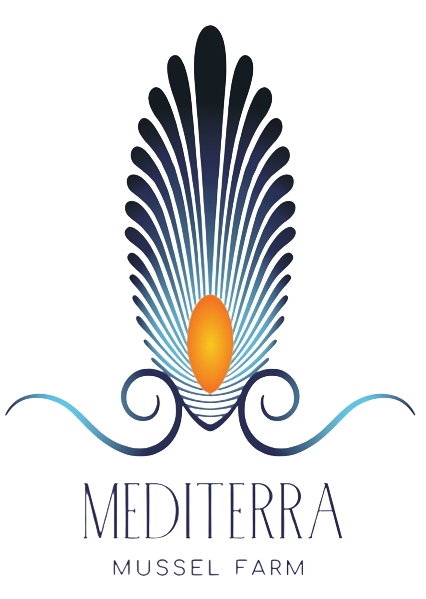

Aquaculture investment in the Mediterranean basin
Institutional investors increasingly see Mediterranean aquaculture as a stable, ESG-aligned asset class. Shellfish offer low input costs, strong yield and rising premium demand.

EnquireMarket intelligence
Research, market data and practical knowledge from aquaculture and the Mediterranean seafood trade.
Institutional investors increasingly see Mediterranean aquaculture as a stable, ESG-aligned asset class. Shellfish offer low input costs, strong yield and rising premium demand.
The €93M fund is a major EU commitment to sustainable aquaculture, with infrastructure grants and certification support relevant to Greek mussel farms.
Water-quality sensors and satellite monitoring are changing how cultivation is managed, improving batch consistency and reducing losses.
Research into shell formation is examining how mussel farming interacts with carbon in seawater, and whether that benefit can be measured.
Mussel shells are finding uses in construction aggregates, calcium supplements and cosmetics, turning processing waste into value.
Chefs and sustainability-minded diners are repositioning mussels from commodity to premium. Origin and method now drive purchase decisions.
Handling guide
Rinse under cold running water. Pull beards firmly toward the hinge. Discard any shell that stays open when tapped.
Three to five minutes, covered, with white wine, garlic and herbs. They are done the moment the shells open.
Rich in protein, omega-3 fatty acids, vitamin B12, zinc and iron — with one of the lowest footprints of any animal protein.
Keep live mussels cold under a damp cloth, never airtight; they need air. Use within two to three days of delivery.